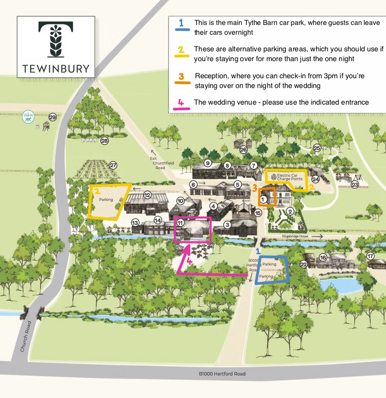

Travelling to Tewinbury
Unless you're staying at Tewinbury itself, the easiest way to get there is via car, as it's
not
walk-able from anywhere else.
If you are coming via train, you can catch one from London Kings Cross to either Welwyn North
station or Welwyn Garden City station and arrive there in 30 minutes.
It's only a 10 minute drive from Welwyn Garden City or 25 mins from St Albans.
Here are some local taxi companies:
- Taxi 1
- Taxi 2
Parking
If you're driving yourself, there is plenty of on-site parking. Anyone travelling on the day of the wedding can use a dedicated Tythe Barn parking area, where you can leave your car overnight if you wish. See the site map on this page for more details, and view the full site map here.
If you have any questions, message Charlie (07599356740) or Fliss (07510391813)
